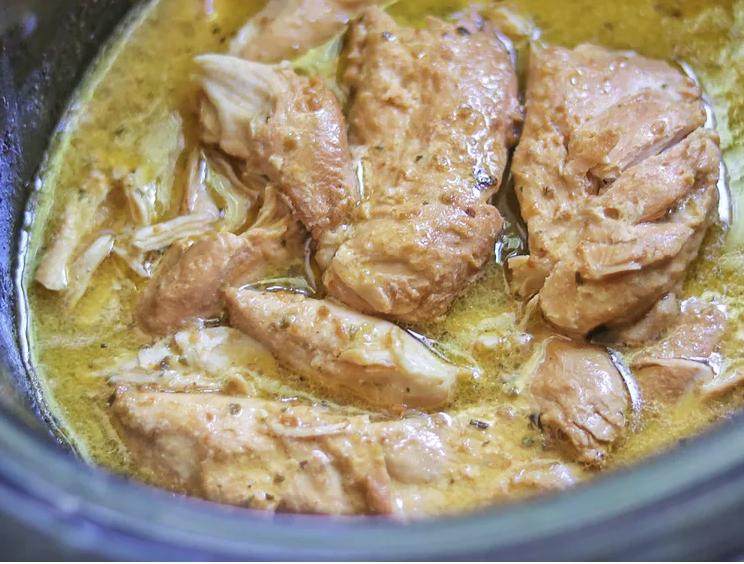

Crockpot Italian Chicken

You only need 3 ingredients for this crockpot Italian chicken with Italian dressing and Parmesan cheese. Nothing could be easier than this for a weekday meal that's ready when you get home.
- Prep Time:5 mins
- Cook Time:8 hrs
- Total Time:8 hrs 5 mins
- Servings:4
Ingredients
- 1 (16 ounce) bottle Italian dressing (such as Olive GardenTM Signature Italian dressing)
- 1/4 cup grated Parmesan cheese
- 4 boneless skinless chicken breasts
Directions
- Stir Italian dressing and Parmesan cheese together in a bowl.
- Place chicken in a slow cooker, and pour dressing mixture over chicken. Cover and cook on Low until chicken is tender, no longer pink in the center, and the juices run clear, about 8 hours.
Nutrition Facts(per serving)
- Calories: 506
- Fat: 31g
- Carbs: 15g
- Protein: 39g